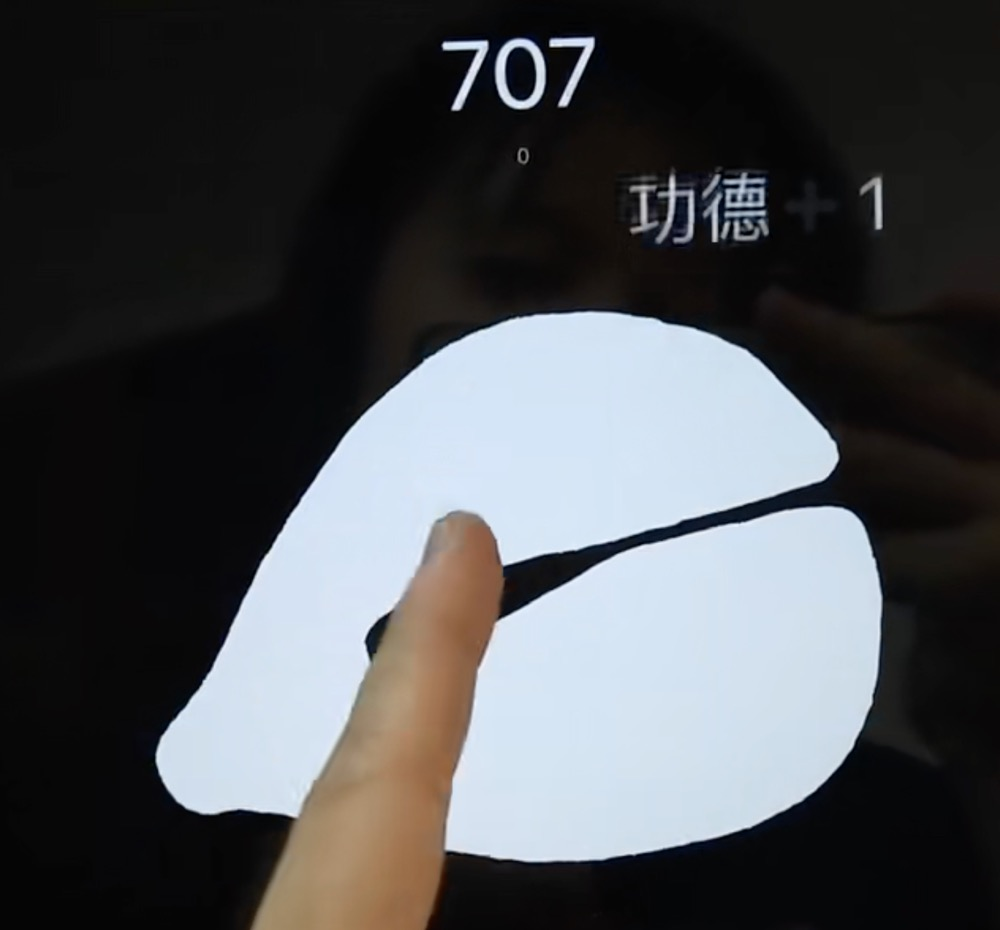
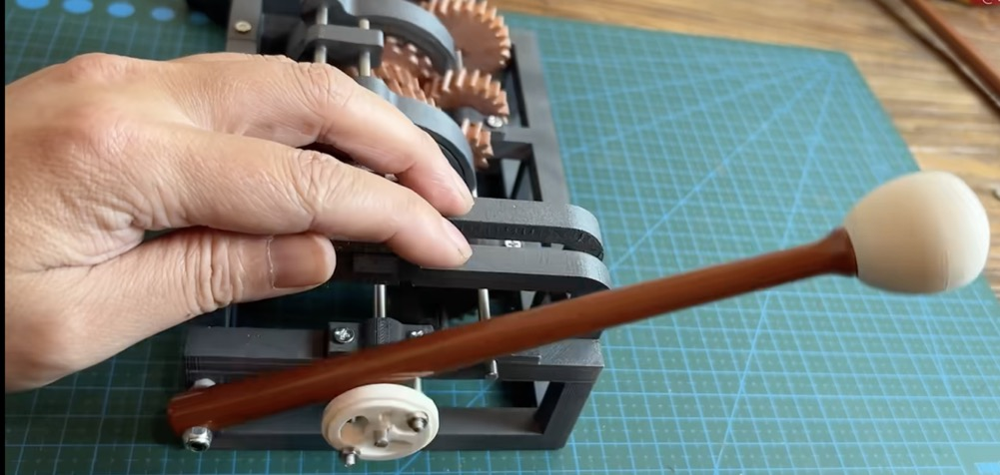
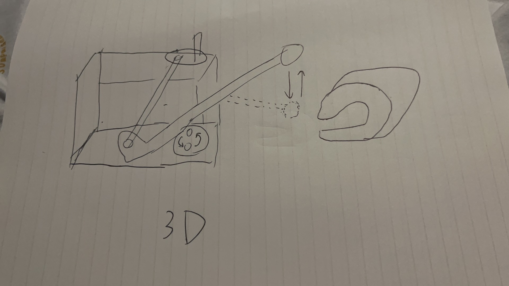
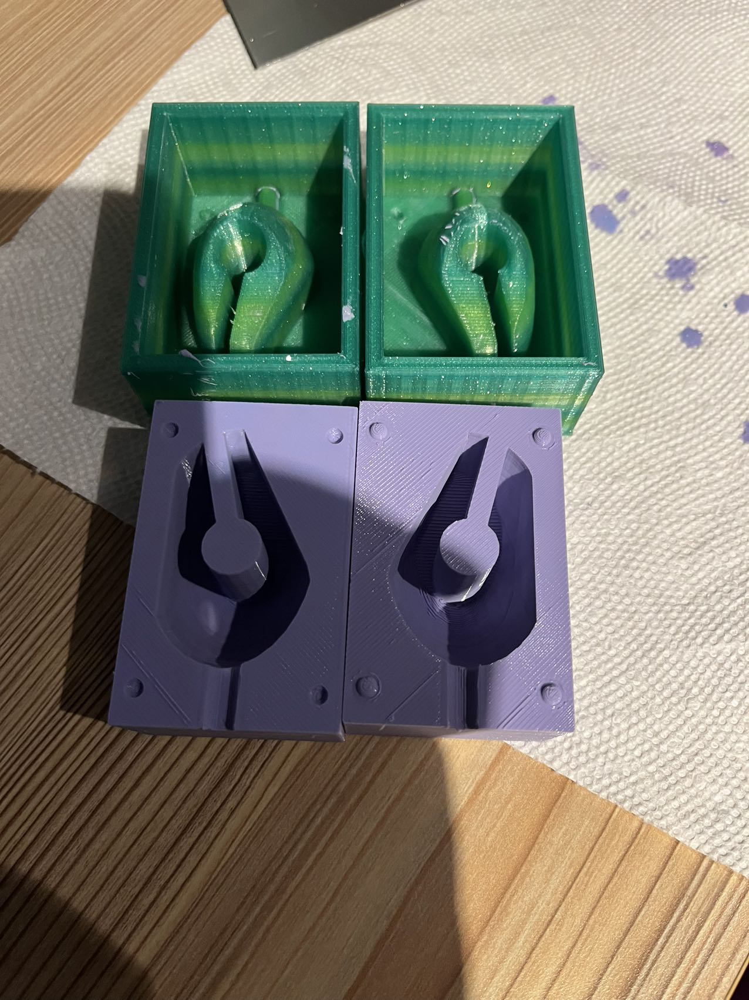
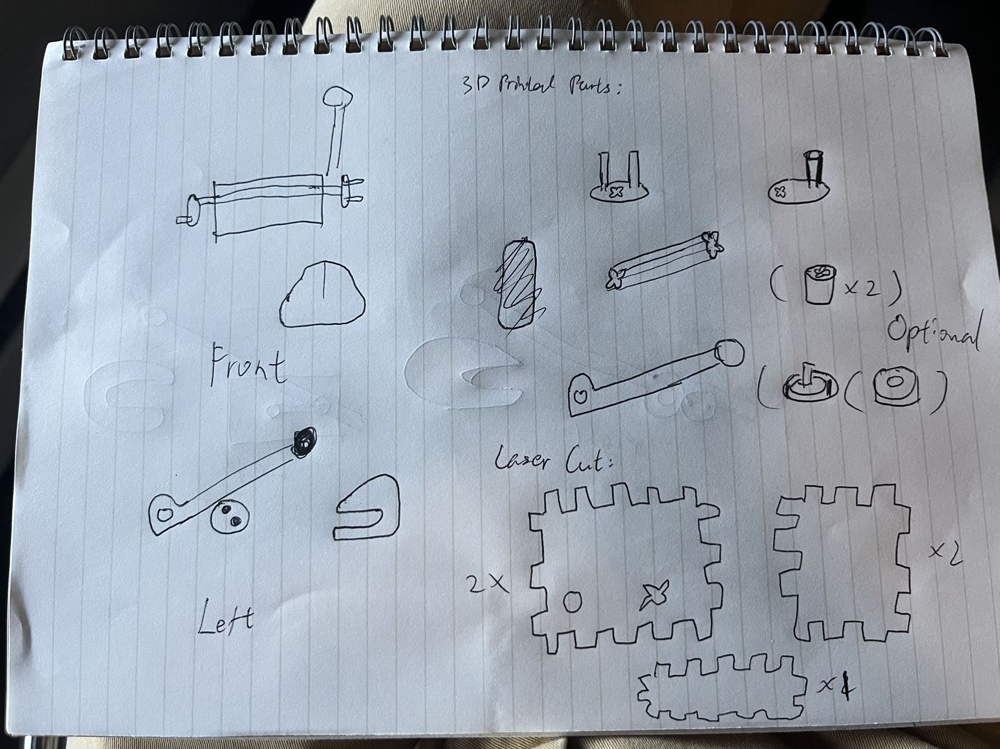

Concept
I'm inspired by the a popular trend in China where people use digital wooden fish on mobile devices to try to improve their mental health. There have been mobile apps developed for this purpose. such as this one. The original wooden fish is a type of instrument and is used to increase one's merit in buddhism while nowadays some young people in China online treat it as something to calm their minds down to peace during this difficult time. I was thinking to make a physical version for myself with the similar purpose.

I found this video where this person made a physical version of an automated wooden fish that can knock by itself with different speeds. I was inspired by the design of how to control the movement of the wooden fish and I decided to design a manual version. Here's the concept sketch:

Tasks
Casting (DONE in Assignment6)
I built two molds for the two silicon molds and used the hydrostone to cast the wooden fish from my silicon molds.

CAD Modelling & 3d printing
Here are all the parts that I need to build models for and to be 3d printed:- Handle
- Drum
- Lever
- Stick
- Holders that can fix the handle, the drum, and the lever on the stick \n Only necessary if they cannot fit with the stick by themselves
I also need to do test prints to make sure they can fit with each other correctly.
Grasshopper & Laser Cutting
I also need to build models for 5 pieces of a box that will be laser cutted. Those five pieces need to have "jagged" joints which can be easily adjusted by using the parmetric design.
Timeline
| # | Tasks | Finish By | Contingency Plan |
|---|---|---|---|
| 0 | Casting the wooden fish | Nov 19th (DONE) | N/A |
| 1 | CAD Modelling & Grasshopper Script | Nov 22nd | N/A |
| 2 | Laser Cutting (parallel with 3d printing - test print) | Nov 30th | 3D print the box rather than using pieces of laser cutted boards to build the box |
| 3 | 3D Printing - test print (parallel with Laser Cutting printing) | Nov 30th | Go back to CAD Modelling and modify models |
| 4 | 3D Printing | Dec 4th | N/A |
| 5 | Documentation (parallel with 3D Printing) | Dec 4th | N/A |
| 6 | Finishing Assembling | Dec 6th | N/A |
Bill of Materials
| # | Name | Schedule |
|---|---|---|
| 1 | Acrylic boards | Arrived at the end of Nov |
| 2 | Filament for 3d printing | Arrived already, purchased in advance |
Special thanks to @Kefeng Wang who help me with Rhino.